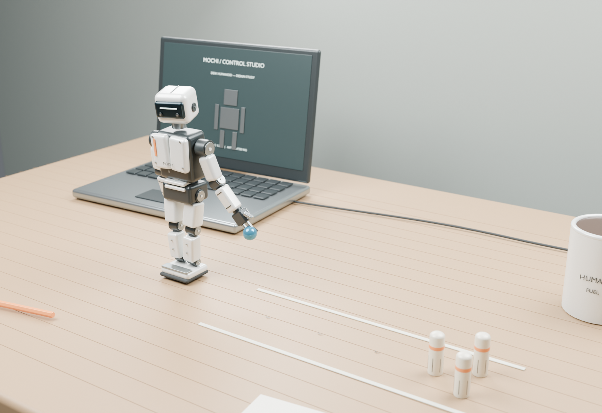
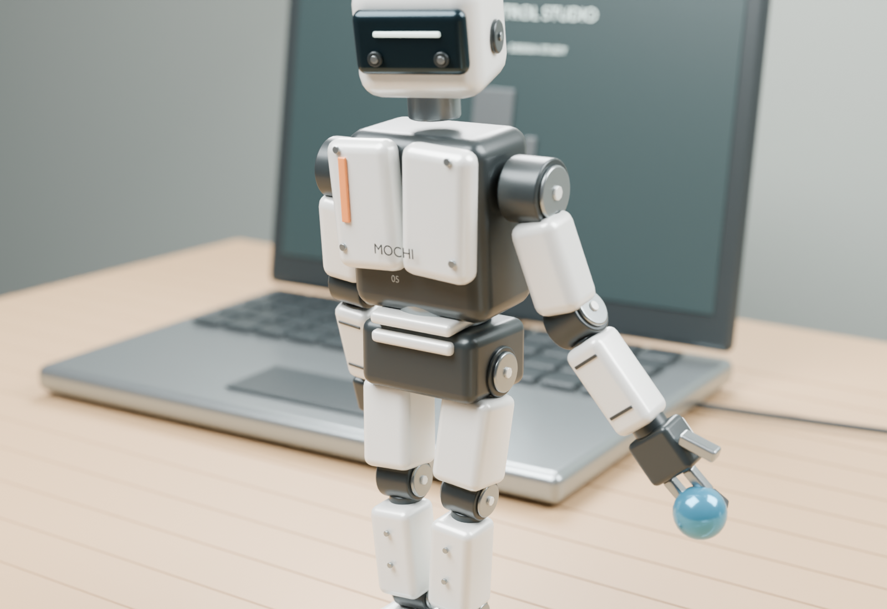

01 / Set up the lane
Three pencil-cap skittles, one glass marble, and a taped lane. A full-size mug becomes an obstacle with a no-spill exclusion zone.
A 22 cm research humanoid with articulated limbs, a compact optical head, and a questionable approach to lunch breaks.

BLENDER DESIGN STUDY · STATIC POSEOriginal procedural geometry. The laptop, coffee mug, pencil, and mouse establish human scale. This image is a design concept, not a simulation outcome.
Split chest plates. Visible motor housings. Segmented forearms. Rubber soles. A compact visor with optical apertures and one narrow status light.
Mochi's personality comes from posture, hesitation, and the absurdity of a sophisticated robot taking desk bowling extremely seriously.

Three pencil-cap skittles, one glass marble, and a taped lane. A full-size mug becomes an obstacle with a no-spill exclusion zone.
Vary the marble's release speed, direction, and contact point. A miss becomes a research question about friction, collision geometry, or release timing.
Let the researcher search, the designer propose, Modal test, and the critic check what actually improved. Keep the embarrassing failures in the notebook.
The study evaluates the existing supported right-arm puck task. Its measurements do not validate this new body, standing balance, gripping, or bowling. Results will appear here after the artifact is checked.
This body is an original Blender model with named visual joint pivots. The current measured experiment remains supported upper-body pushing with one actuated arm. Walking, unsupported balance, gripping, and bowling require their own physics model, controller, and evaluation before they can be demonstrated as working.
Open the measured experiment → Inspect the original model source ↗